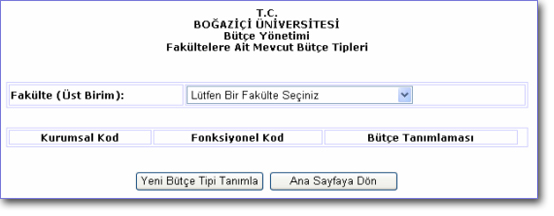
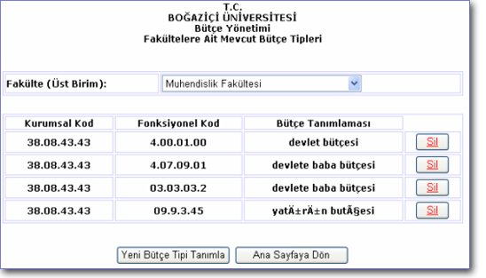

Anasayfanýn solundaki menuden ulaþýlabilen bu sayfada mevcut fakültelere ait bütçe tipleri görüntülenir. Bunun için ilgili fakulte (üst birim) seçilir ve seçimin hemen ardýndan kodlar sayfada belirir. Kullanýcý bunlardan silmek istediklerini, yanlarýndaki “Sil” düðmesini týklayarak silebilir. Ayrýca “Yeni Bütçe Tipi Tanýmlama” düðmesi týklanarak da yeni fonsiyonel kod oluþturmak için ilgili sayfaya yönelendirilir. Kullanýcý ana sayfaya “Ana Sayfaya Dön” düðmesine basarak ulaþabilir.

